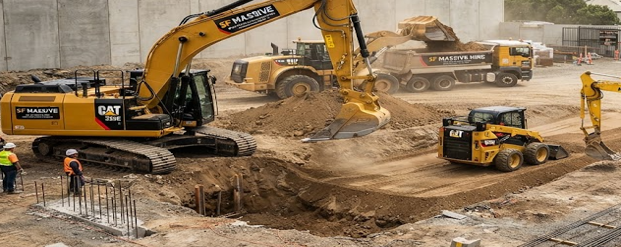
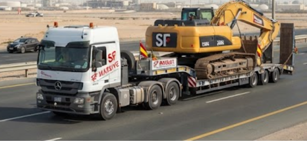
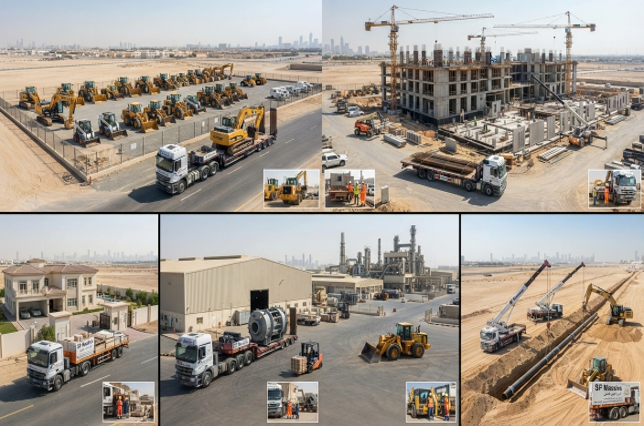

النقل باللوبد
نقل الآليات والمعدات الثقيلة، بتخطيط يراعي الأبعاد ومتطلبات التحميل والمسار والوجهة.
الرئيسية / خدماتنا / 02
خدمات نقل وتأجير معدات منسّقة لمشاريع الإنشاءات والصناعة والبنية التحتية.
ناقش احتياجات النقلالنقل والمعدات
تدعم إس إف ماسيف لوجستيات المشاريع من خلال تنسيق النقل وتأجير المعدات الثقيلة. نراجع الحمولة أو المعدة المطلوبة، والمسار وظروف الموقع، والجدول الزمني، ومتطلبات المناولة لتحديد النطاق المناسب.
ملف الخدمة
صور مختارة من هذا القسم.




الصور من ملف الشركة، ولم يتم التحقق من نسبتها إلى مشاريع محددة.
الخدمات المتاحة
يتم تحديد المركبات والمعدات لكل طلب حسب التوفر وظروف المسار والنطاق المتفق عليه.
نقل الآليات والمعدات الثقيلة، بتخطيط يراعي الأبعاد ومتطلبات التحميل والمسار والوجهة.
نقل الهياكل الحديدية ومواد البناء وبضائع المشاريع مع تخطيط وتثبيت مناسب للحمولة.
نقل المعدات الصغيرة والأدوات والمواد والاحتياجات العاجلة للموقع.
نقل ورفع الأحمال المناسبة، مع تنسيق مسبق لمتطلبات التمركز والتنزيل.
يشمل التأجير الحفارات والشيولات والبوبكات والمداحل والباكهو والمولدات، حسب التوفر والمتطلبات.
تنسيق نقل المعدات ومواعيد التوصيل والوصول والتنزيل ومتطلبات التسليم في الموقع مع ممثلي المشروع.
تنسيق التوصيل
نراجع كل طلب حسب متطلبات النقل والموقع الفعلية.
خدمات ذات صلة
تأجير المعدات ونقل الآليات في جدة ومكة والمدينة وينبع والرياض والدمام، حسب التوفر.